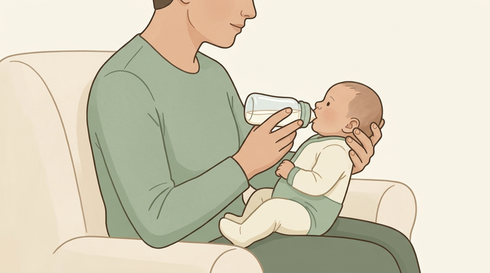
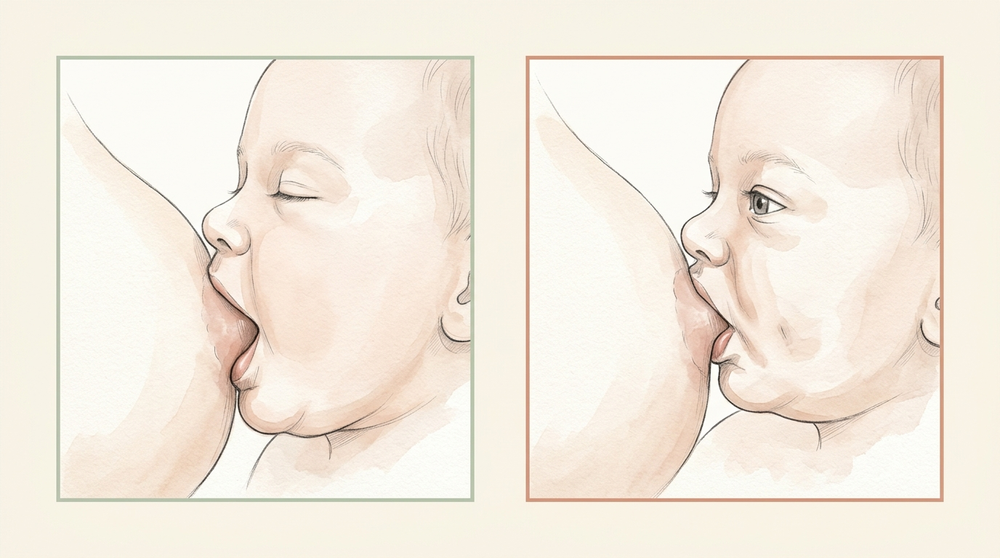
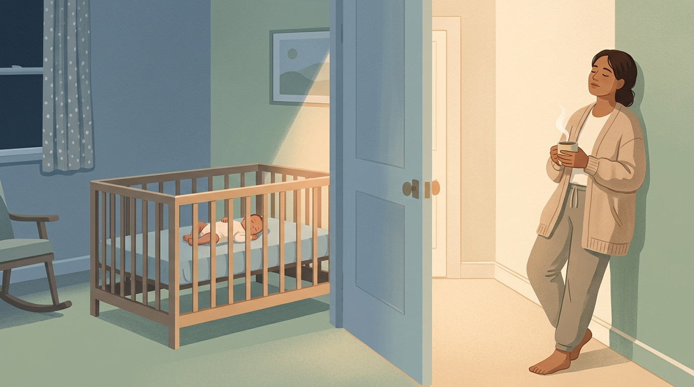

The Colic Survival Guide
A calm, mobile-friendly reference for parents of babies 2 to 10 weeks old.
Before You Start
If you are reading this at 3 AM with your baby crying and your phone in one hand, take a slow breath. You are not doing anything wrong. Colic usually peaks around week 6 and eases by about 3 to 4 months.
I read and weigh research literature for a living. I am not a pediatrician or lactation consultant. This guide organizes practical starting-point patterns so you can test one calm change at a time instead of guessing in the dark.
Is It Colic? (Signs & Red Flags)
Colic is a benign, self-limited pattern of recurrent, prolonged crying in an otherwise healthy, well-growing baby. It usually peaks around week 6 and eases by about 3 to 4 months.
Common Physical Signs During an Episode
- Inconsolable crying that clusters in the late afternoon or evening
- Abdominal tension or swelling
- Facial flushing and grimacing
- Clenched fists
- Pulling or flexing legs and arms toward the belly
Practical Starting-Point Patterns
Researchers have not identified a single proven cause of colic. In practice, it helps to look at three starting-point patterns one at a time rather than trying everything at once:
- Gut microbiome pattern: Early gut flora differences or cow's milk protein sensitivity.
- Nervous system pattern: Sensory overload and difficulty settling during late-day crying windows.
- Feeding mechanics pattern: Swallowed air from a shallow latch, fast milk flow, or rushed bottle feeds.
Red Flags: When to Call Your Doctor
Fever, vomiting (especially green), blood in stools, poor feeding, or a baby who seems limp or very hard to wake: call your doctor now, not later. A doctor should also evaluate any of the signs below to rule out medical causes:
| Warning Sign | What a Doctor Checks For |
|---|---|
| Fever | Infection (ear infection, urinary tract infection, viral or bacterial illness) |
| Lethargy or very hard to wake | Serious infection or neurological concern |
| Distended, hard, or tender belly | Bowel obstruction or other gastrointestinal condition |
| Forceful or green/yellow vomiting | Pyloric stenosis, severe reflux, or bowel obstruction |
| Bloody stools, rash, or chronic diarrhea | Cow's milk protein allergy or anal fissure |
| Poor weight gain or refusal to feed | Inadequate intake or underlying metabolic or feeding issue |
| Swelling in the groin or scrotum | Hernia or testicular torsion |
| Swollen finger, toe, or genitalia | Hair tourniquet (a stray hair wrapped tightly around a digit) |
| Excessive tearing or eye redness | Corneal abrasion (scratched eye) |
The Feeding-Type Action Plan
What you test first depends on how your baby is fed. Formula-fed and mixed-fed babies lead with feeding mechanics and soothing steps, not probiotics.
| Option | Best Fit | What the Research Shows | Practical Note |
|---|---|---|---|
| L. reuteri DSM 17938 | Exclusively breastfed babies only | Savino 2010 (Pediatrics, 50 exclusively breastfed infants, 46 completed) found reduced crying in exclusively breastfed babies, while Sung 2014 (BMJ, 167 infants, breastfed and formula-fed) found no benefit over placebo. | Talk to your pediatrician before starting any supplement. Formula-fed and mixed-fed babies should lead with feeding and soothing steps, not the probiotic. |
| Maternal Low-Allergen Diet | Breastfed babies | Short-term elimination of common allergens (such as cow's milk protein) may help when sensitivity is suspected. | Avoid extreme or permanent restrictions. Plan any structured elimination trial with your pediatrician or dietitian. |
| Extensively Hydrolyzed Formula | Formula-fed babies | Clinical trials support short-term trials when cow's milk protein sensitivity is suspected. | Ask your pediatrician before switching formulas. Looser stools can happen during a transition. |
| Adapted Low-Lactose Formula | Formula-fed babies with heavy gas | Small cohort evidence suggests reduced gas in babies with transient lactose malabsorption. | Discuss with your pediatrician if bloating and heavy gas are the main pattern. |
What to Skip (or Discuss Carefully With Your Doctor)
- Simethicone (Gas Drops): Trials have not shown a benefit over placebo.
- Gripe Water: There is no good trial evidence of benefit.
- Proton Pump Inhibitors (PPIs): Acid-suppressing medications do not reduce colic crying in otherwise healthy babies without diagnosed reflux disease.
- Dicyclomine: Contraindicated in young infants due to serious side effects.
- Soy Formula: The American Academy of Pediatrics recommends against routine use of soy formula for colic.
- Chiropractic & Osteopathic Manipulation: Cochrane reviews find insufficient evidence to support spinal or osteopathic manipulation for colic.
- Herbal Teas & Supplements: Safety and efficacy evidence in young infants is limited; talk to your pediatrician before starting any supplement.
Quick-Guide: Paced Bottle Feeding
Paced feeding slows the flow so your baby controls the pace instead of gulping against gravity.

- Use a slow-flow nipple: Start with a newborn or slow-flow nipple.
- Hold your baby upright: Support your baby in an upright or semi-upright position with head and neck aligned.
- Keep the bottle nearly horizontal: Angle it just enough to keep the nipple fully covered with milk without gravity pouring it down.
- Let your baby draw the nipple in: Gently brush the nipple against your baby's lips and wait for a wide mouth.
- Pause every few swallows: Tip the bottle down briefly after several steady swallows so your baby can catch their breath.
- Watch fullness cues: Burp during and after the feed, and never force your baby to finish a bottle if they turn away or relax their hands.
Note: Gas, spit-up, or crying after feeds does not automatically mean your baby has colic. Because swallowed air rises above milk in the stomach, holding your baby upright briefly after a calm feed (Kassing, 2002) helps trapped gas exit before laying them flat.
Breastfeeding Mechanics: Latch, Flow & Rhythm
For breastfed babies, how milk is delivered can affect swallowed air and tummy comfort. Two mechanical patterns often show up:
- Swallowed air: Happens when a shallow latch breaks the seal or when a baby gulps to keep up with a fast letdown.
- Foremilk/hindmilk imbalance: Happens when a baby fills up quickly on lower-fat, higher-lactose milk from an oversupply, which can lead to extra gas and green, loose stools.
1. Aiming for a Deep, Comfortable Latch
Painful nursing or a nipple that looks flattened or slanted like a lipstick tip after a feed is usually a positioning and latch-depth pattern, not a supply issue. A deep latch moves your nipple past the bony hard palate into the soft palate ("comfort zone"), which reduces compression and air swallowing.
- Align ear, shoulder, and hip: Hold your baby tummy-to-tummy so their neck is not twisted.
- Start nose-to-nipple: Line up your baby's nose with your nipple so they tilt their head back and open wide.
- Try the 3-step Flipple technique: Wait for a wide, yawn-like mouth opening, bring your baby in chin-first (aiming for more areola below the nipple than above), and gently roll the nipple upward toward the roof of their mouth as they latch.
- Break suction gently: Slide a clean pinky finger into the corner of your baby's mouth before unlatching.

| Sign | Deep, Comfortable Latch | Shallow Latch to Adjust |
|---|---|---|
| Sucking Rhythm | Slow, deep, rhythmic jaw drops with pauses | Fast, fluttery, or shallow nibbling |
| Sounds | Quiet feeding with soft swallowing sounds | Repeated clicking, smacking, or gulping |
| Baby's Cheeks | Rounded cheeks, chin pressed into the breast | Cheeks dimpling inward, tucked lips |
| Your Comfort | Comfortable after the initial latch; rounded nipple afterward | Ongoing pinching or a slanted, compressed nipple |
2. Positioning & Flow Control
- Laid-back nursing: Recline comfortably at a semi-reclined angle (not flat on your back) with your baby resting tummy-to-tummy. Gravity helps slow a fast milk flow.
- Post-feed upright hold: Hold your baby upright against your chest or shoulder for 10 to 20 minutes after feeds so trapped air can rise naturally.
- Managing fast letdown: If your baby coughs or pulls off during the initial spray, unlatch briefly into a cloth until the flow steadies, then re-latch.
- Managing oversupply: Avoid extra pumping before feeds, let your baby finish the first side before offering the second, and get guidance from an International Board Certified Lactation Consultant (IBCLC) if pain, clicking, or oversupply continues.
Not sure which pattern fits your baby tonight?
Stop guessing across feeding mechanics, gut sensitivity, and nervous system overload. Take the free 90-second starting-point assessment, or explore the complete system in the Calm Baby Blueprint.
The Soothing Toolkit
Soothing tools do not shorten colic, but they can help calm your baby's nervous system through late-day crying windows.
- Upright burping and shoulder holds: Holding your baby upright against your shoulder after feeds helps release trapped air.
- Rhythmic motion: Calm walking, gentle rocking, or babywearing gives steady sensory input.
- Gentle tummy comfort: Light clockwise tummy rubs can help your baby relax, though trial evidence on massage is mixed.
- Brown noise: Use brown noise only, kept quiet, low, across the room, on a timer.
- Warm bath: A comfortably warm bath can help reset a tense, overtired baby.
Gentle Burping: The Circular Rotation Reset
Forceful back-patting when your baby will not burp can make trapped gas worse by causing abdominal tension. Instead of hard thumping, try a gentle rotation reset:
- Sit your baby upright on your lap with a burp cloth ready.
- Support their chin and chest gently with one hand.
- Slowly rotate their upper torso in small, gentle clockwise circles so trapped air can rise naturally.
Safe Sleep Reminder
If you use an awake tummy-down hold (such as resting your baby along your forearm), always return your baby to their back on a firm, flat, empty crib or bassinet surface for sleep.
Protecting the Caregiver
Inconsolable crying is exhausting and is a major trigger for caregiver burnout, postpartum depression, and unsafe frustration. Protecting your own nervous system is part of keeping your baby safe.

"A crying baby in a safe, empty crib is always okay."
Your 3-Step Safety Reset
- The 10-minute safe reset: If you feel panic, anger, or helplessness rising, place your baby safely on their back in an empty crib, step into another room for 10 minutes, breathe, drink water, or call someone you trust.
- Split the evening window: If you have a partner or helper, trade off in 30-to-60-minute shifts. When you are off shift, use earplugs or headphones so your nervous system can actually rest.
- Lean on your care team: Reach out to your pediatrician or healthcare provider not just to check your baby's growth, but also for postpartum mental health support if you are struggling.
7-Day Colic & Feeding Log
Change one thing at a time and bring this log to your pediatrician.
Swipe sideways on mobile, or tap Print Tracker for a clean single-page sheet.
| Day | Feeding / Formula / Diet Change | Peak Crying Window | Soothing Steps Used | Stool / Gas Notes | Caregiver Stress (1-10) |
|---|---|---|---|---|---|
| Day 1 | |||||
| Day 2 | |||||
| Day 3 | |||||
| Day 4 | |||||
| Day 5 | |||||
| Day 6 | |||||
| Day 7 |
Ready for the Complete Calm Baby Blueprint?
If this guide helped you spot what is going on at 3 AM, the Calm Baby Blueprint gives you the 54-page illustrated colic management system with 11 clinical plates, three practical starting points, and the Bloom digital tracker so you can change one thing at a time and track what helps.
$47, one time. Instant access. No subscriptions.
72-Hour Guarantee. If it doesn't produce a meaningful shift in 72 hours, reply and I'll make it right. You keep the Blueprint either way.